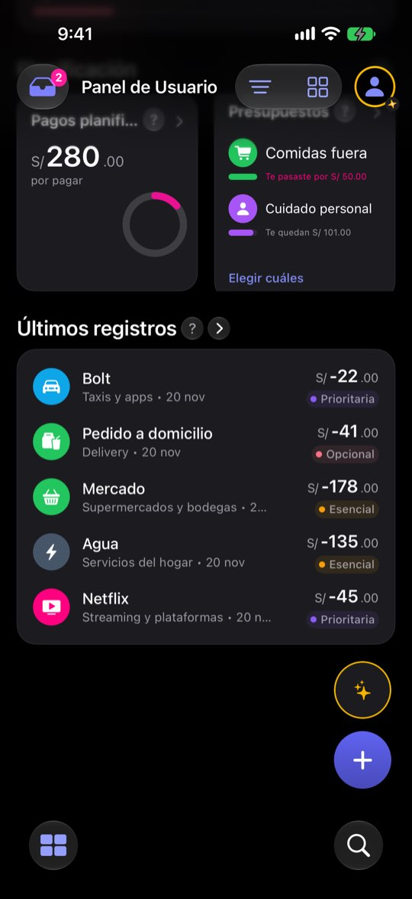
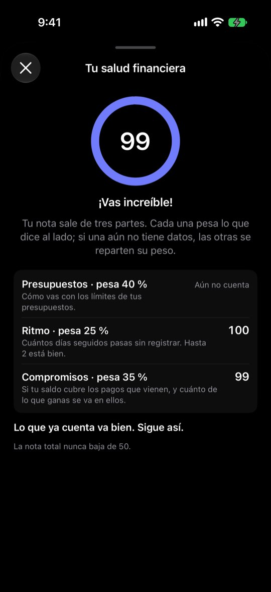
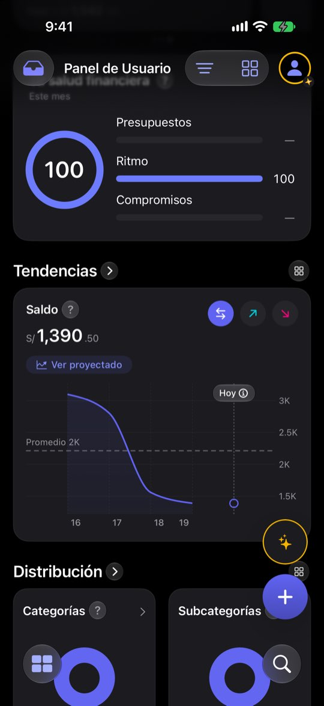

La nota de salud premia con pocos datos y no ve lo que va mal
ficha con el reloj del simulador en el 20 de noviembre de 2026: cuatro cuentas (Ahorros USD $33,615 · Cuenta Principal S/ −53,738.91 · Efectivo S/ 380 · Tarjeta de crédito S/ 1,284.30 por pagar), balance de noviembre S/ 6,882.40 (entró S/ 12,910.40, salió S/ 6,028), saldo total S/ 64,690.04 y una nota de salud de 99. El saldo negativo de la Cuenta Principal sale de cómo la semilla reparte dos años de gastos; aquí sirve para ver qué hace el Panel con una cuenta en rojo. Ninguna cifra es de una persona real.Lo que se ve hoy
- Observado Capturas 02, 04, 11, 23 y 29
- Observado Código: pesos 40/25/35 que se reparten si falta una parte, y suelo de 50 (FinancialScoreCalculator.swift:56-63 y 165-175)
- Observado Código: un presupuesto solo cuenta en tramos que empezaron después de crearlo (FinancialScoreCalculator.swift:219-229)
- Observado Código: el ritmo mide huecos solo entre días con registros; con un solo día, 100 (FinancialScoreCalculator.swift:345-359)
- Hipótesis Una nota alta que contradice lo que la persona ve en sus cuentas le quita crédito a toda la tarjeta




Alternativas
Todas con el mismo caso. Las cifras salen de las capturas salvo donde la maqueta dice «ilustrativo».
Sin nota hasta tener las tres partes
Las barras se ven siempre; el número global solo aparece cuando cuentan las tres partes. Mientras, la tarjeta dice qué falta.
Todavía no hay nota este mes
La nota junta tres partes. Este mes cuentan dos: tus presupuestos empiezan a contar en diciembre porque los creaste a mitad de mes.
A favor
- Acaba con el 100 de una sola parte y el 96 del día 1
- No cambia pesos ni fórmula
En contra
- Quien no tiene presupuestos ni pagos nunca ve un número
- Hay que decidir si «dos de tres» basta
Decir lo que la nota no ve
La nota no cambia; la tarjeta añade por qué un «—» y una línea con lo que va mal y no cuenta.
A favor
- La nota deja de contradecir al resto del Panel
- Reusa datos que el Panel ya tiene (presupuesto pasado, saldo de cada cuenta)
En contra
- La tarjeta crece
- «¡Vas increíble!» con una alerta debajo sigue chocando: el mensaje de la hoja también debería cambiar
Niveles en vez de número
«Bien · Atento · Revisa» en vez de 0-100. Sin número no hace falta el suelo de 50.
A favor
- Menos falsa precisión
- Más fácil para quien no sabe qué es «un 72»
En contra
- Pierde la sensación de progreso fino
- Rehace la tarjeta, la hoja y los textos de 16 idiomas
Una cuarta parte: el saldo
La nota mira también si alguna cuenta está en negativo (sin contar tarjetas de crédito).
A favor
- Una cuenta en rojo baja la nota, como espera la persona
En contra
- Cambia la fórmula: pide decidir pesos y casos (sobregiro, préstamo)
- Requiere tests nuevos del cálculo; zona de cálculo financiero
Lado a lado
| A | B | C | D | |
|---|---|---|---|---|
| Acaba con el «100 de una parte» | Sí | No | Sí | No |
| Ve la cuenta en rojo | No | Lo dice | No | Sí |
| Cambia el cálculo | No | No | Sí | Sí |
Recomendación
A + B. A quita la nota cuando no hay con qué calcularla; B hace que la tarjeta diga lo que la nota no ve. Ninguna toca la fórmula. C y D son decisiones de producto sobre qué mide la nota: conviene tomarlas después de ver A y B en el simulador.
Decide Jürgen
¿Cuántas partes hacen falta para enseñar una nota (A: tres, o dos de tres)? ¿Se muestra lo que la nota no ve (B)? ¿Se reabre la escala (C) o los pesos (D)?
Revisión por vistas 2.3 · Panel · 7-nov-2026. Capturas del simulador (build Debug de origin/2.3, iPhone 17 Pro e iPad Pro 13, iOS 27.2, modo oscuro, datos ficticios). Los siete perfiles son lentes simuladas, no entrevistas.